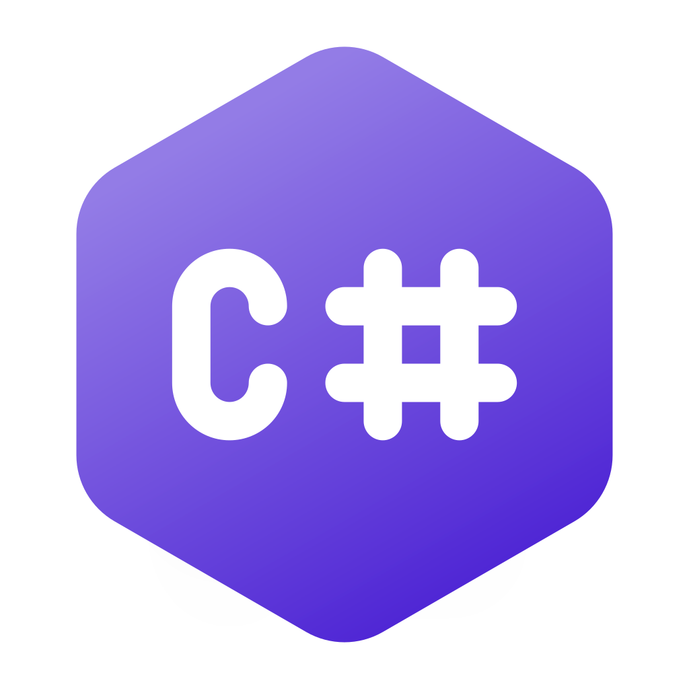

Humanfab Workcare
Application mobile de prévention au travail.
- 
Application mobile de prévention au travail.
Mon portfolio en ligne.

Un algorithme qui génère l'ensemble de Mandelbrot.
Un algorithme de simulation de sable à l'aide d'un automate cellulaire.
Un clone du jeu du démineur.
Humanfab Workcare est une solution proposée aux entreprises afin que les employés puissent rester en bonne santé en proposant des séance de sport sur mesure.
Nous étions une équipe composée de 5 à 7 personnes, comprenant un designer, des développeurs front-end et mobile et moi-même, un développeur back-end
J'ai travaillé sur l'API en gérant le système d'authentification, et en développant différents algorithmes, tels que la génération de profils types en fonctions des données de santé de chaque utilisateurs, la génération de séance de sport en fonction de ces profils et le calcul de différentes statistiques à destination d'un dashboard.
Le back-end est développé en C# dans l'environnement Asp.NET.
Dans le cadre de mes études et afin de pouvoir montrer mes compétences à mes futurs employeurs, j'ai conçu et développé un portfolio en ligne.
J'ai effectué toute la gestion de projet, en commençant par l'analyse de l'existant, puis par la définition des personnas. De là j'ai pu déterminer tout ce qui devait se trouver dans mon portfolio. S'en ai suivi la définition des risques et contraintes ainsi que la planification.
Le projet a été développé en HTML / CSS à l'aide de SASS avec la syntaxe SCSS, et le formulaire de contact ainsi que l'envoie de l'email est traité avec PHP.
Les fractales sont un concept qui m'a toujours faciné. J'ai donc naturellement choisi de créer un algorithme qui génère la plus emblématique des fractales : « l'ensemble de Mandelbrot ».
La génération et la visualisation de l'ensemble est gérée par Processing.
C’est un projet personnel nait de ma curiosité des automates cellulaires. L’utilisation du bon jeu de règles pour cet automate a donné une simulation de sable, en imaginant que chaque cellule est un grain de sable.
La simulation et la visualisation est gérée par Processing.
C'est un clone du jeu du démineur. Ce qui m'a paru intéressant, c'est l'utilisation d'un algorithme récursif afin de dévoiler les cases vides lors d'un clic sur l'une d'entre elles.
Le jeu et la visualisation est gérée par Processing.